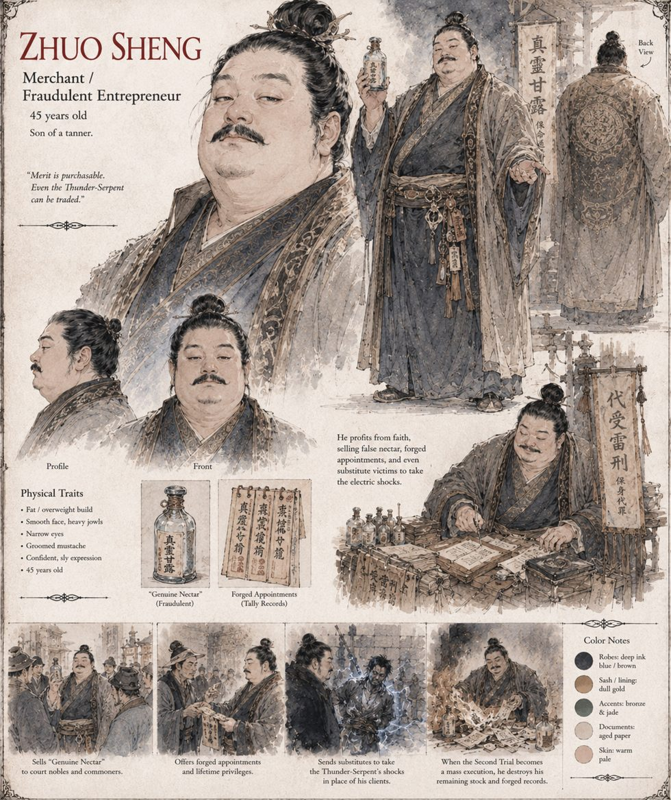

Zhuo Sheng
Merchant · 45 years old · son of a tanner
A tanner's son who, within a year of the serpent's arrival, is running three separate operations: bottled river water sold to provincial nobles as Genuine Nectar, Blessed at Source; forged appointment tallies sold to heirs too impatient to wait their family's turn; and, for buyers who want the bragging rights of the burn without the indignity of the basin, a service in which hired substitutes stand in the queue and take the shock in their place. He makes in eight months more silver than his father the tanner made in forty years of honest work, and describes the period, later, to the two associates he trusts, as the finest and most fraudulent of his career.
On the afternoon the Second Trial turns into a mass execution, he quietly empties his stock into the nearest canal, along with two crates of forged appointment tallies he judges, correctly, to have become considerably more incriminating than valuable. The silver outlives the empire.
“Merit is purchasable. Even the Thunder-Serpent can be traded.”